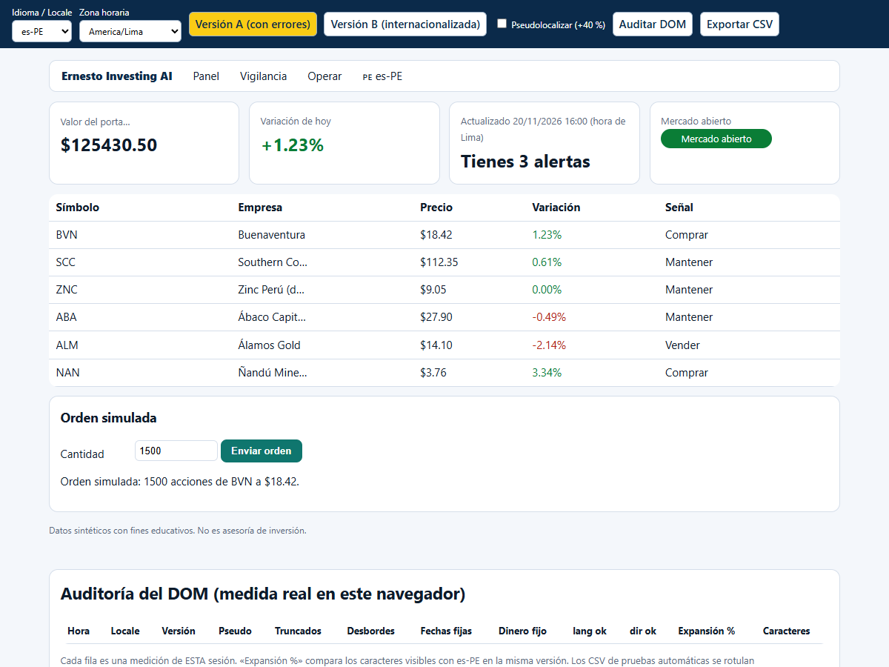
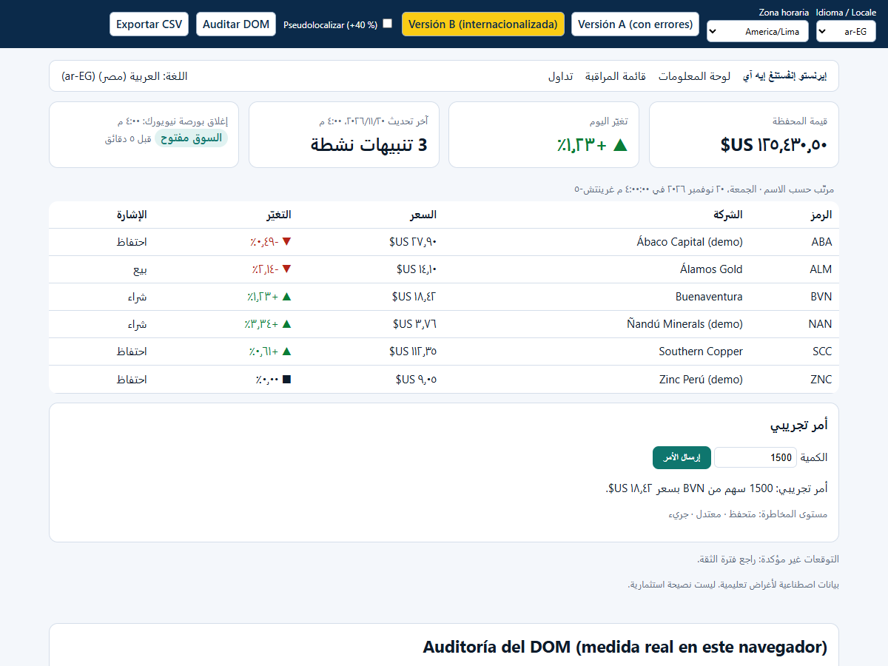

Laboratorio 13 · Internacionalización y localización de interfaces
Curso de Interacción Hombre-Computador, FISI-UNMSM, 2026-II. Caso común: «Ernesto Investing AI» (datos sintéticos) en es-PE, en-US, qu-PE (borrador), ar-EG y ja-JP.
- Ejercicio 13.1 · Laboratorio de codificacionesPuntos de código, bytes UTF-8/UTF-16, grafemas, mojibake y normalización NFC/NFD.
- Ejercicio 13.2 · Portal A (con errores) frente a B (internacionalizado)12 errores clásicos, 5 idiomas, RTL, pseudolocalización y auditor del DOM con CSV.
- Ejercicio 13.3 · Experimento de formatos ambiguos y explícitos16 ítems con orden contrabalanceado, tiempo, confianza y CSV por participante.

